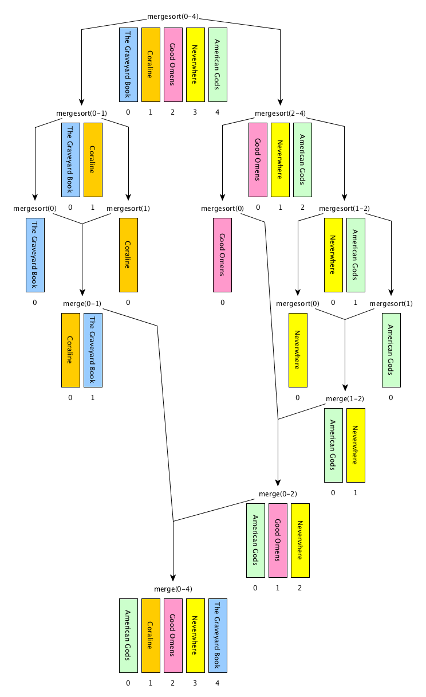

These lecture notes introduce the notion of divide and conquer algorithms with the implementation of one algorithm of this kind: merge sort. The historic hero introduced in these notes is John von Neumann, who proposed a set of guidelines for the designing of the EDVAC named after him, that have been used as fundamental design principles for building the first electronic computers.
Copyright notice. This work is licensed under a Creative Commons Attribution 4.0 International License. You are free to share (i.e. copy and redistribute the material in any medium or format) and adapt (e.g. remix, transform, and build upon the material) for any purpose, even commercially, under the following terms: attribution, i.e. you must give appropriate credit, provide a link to the license, and indicate if changes were made. You may do so in any reasonable manner, but not in any way that suggests the licensor endorses you or your use. The licensor cannot revoke these freedoms as long as you follow the license terms.
Historic hero: John von Neumann
John von Neumann (depicted in ) was a computer scientist, mathematicians, and physicists. He was very active in all these disciplines, and made an incredibly huge number of contribution in several fields, such as quantum mechanics, game theory, and self-replicating machines.
One of his most important and famous contributions in the Computer Science domain was the digital computer architecture named after him . It has been described for the very first time in an incomplete document written by John von Neumann for defining the main design principles of the Electronic Discrete Variable Automatic Computer (EDVAC), the binary-based successor of the ENIAC. The von Neumann's architecture has been used as main guidelines for building several physical electronic computers in the following years, and still represent a good approximate model for describing several of the main components of today's digital computers.
He also made several other crucial contributions in Computer Science, such as the merge sort algorithm we introduce in this lecture. In addition, he was one of the people involved in the top-secret Trinity project and its related parent project, i.e. the Manhattan project, during the World War II.
Ordering billions of books
In one of the previous lectures, we have introduced an algorithm for ordering the items in a list called insertion sort. It is a quite simple – even natural, we could say. This algorithm that works exceptionally well when the size of the list is small, but it is not very efficient when we have to deal with an incredibly big amount of data. This behaviour is due to the brute-force approach it is implementing. In fact, while rather simple, the mechanism followed by the insertion sort obliges a computer to scan the list several times for constructing an ordered list from an unordered one.
However, the insertion sort is not the only algorithm proposed for ordering the items in a list. Other, rather efficient, approaches have been developed in the past, in order to perform a better (and quicker) sorting of list items in a more reasonable time – even for an electronic computer. Some of these algorithms works if particular pre-conditions hold – such as to specify the number of buckets for the bucket sort algorithm.
Divide and conquer sorting algorithms are among those ones that behave efficiently well on large input lists. Divide and conquer is an algorithmic technique that, in contrast to brute-force, split the original computational problem to solve in two or more smaller problems of the same type, until they became solvable directly by executing a simple set of operations. Then, the solutions to these sub-problems are recombined in order to provide the solution for the original problem. Any divide and conquer algorithm is based on the recursive call of the very same algorithm. In particular, it is based on the following (informal) steps:
[base case] address the problem directly on the input material if it is actually depicting an easy-to-solve problem; otherwise
[divide] split the input material into two or more balanced parts, each depicting a sub-problem of the original one;
[conquer] run the same algorithm recursively for every balanced parts obtained in the previous step;
[combine] reconstruct the final solution of the problem by means of the partial solutions obtained from running the algorithms on the smaller parts of the input material.
Several divide and conquer sorting algorithms have been proposed in the past. In this lecture, we introduce just one of these: the merge sort.
Merge sort
The merge sort (or mergesort) algorithm has been proposed by John von Neumann in 1945. It implements a divide a conquer approach for addressing the following computational problem (that we have already seen when we have introduced the insertion sort):
Computational problem: sort all the items in a given list.
Unlikely the insertion sort, the sorting approach defined by the merge sort is lesser intuitive, but it is more efficient even considering a large list as input – such as all the books included in the Library of Babel that we have illustrated a few lectures ago. In particular, the merge sort is a recursion-based algorithm – like any other divide and conquer approach – and uses another ancillary algorithm in its code, i.e. def merge(list_1, list_2). This latter algorithm is responsible to combine two ordered input lists together so as to return a new list which contains all the elements in the input lists ordered. The loop suggested by this algorithm to create such a new list is illustrated as follows:
consider the first elements of both the input lists;
remove the lesser element from the related list and append it into the result list
if the input list from which the element has been removed is not empty repeat from 1, otherwise append all the elements of the other input list to the result list.
The process of merging two ordered lists of books together in a new list having all books ordered.
In , we illustrate graphically the execution of the algorithm merge by using two lists of books as inputs, i.e. list(["Coraline", "The Graveyard Book"]) and list(["American Gods", "Good Omens", "Neverwhere"]) respectively. In particular, the first four steps of the execution start the creation of the output list by comparing the first elements of the input lists at each iteration of the loop. Then, in the 5th step, all the elements of the only non-empty input list are then appended to the output list in the order they appear in the input list. Finally (step 6), the output list is completed and is returned. The implementation in ThyMopani of the merge algorithm is illustrated in .
def merge(list_1, list_2):
result = list() # the merged list to return
# repeat until both lists have at least one item
while len(list_1) > 0 and len(list_2) > 0:
list_1_item = list_1[0] # first item in list 1
list_2_item = list_2[0] # first item in list 2
# if the item in list 1 is less than the one in list 2, the former is
# added to the merged list and removed from list 1
if list_1_item <= list_2_item:
result.append(list_1_item)
list_1.remove(list_1_item)
else: # otherwise, the latter is added to the merged list and removed from list 2
result.append(list_2_item)
list_2.remove(list_2_item)
# add to the merged list the remaning items
result.extend(list_1)
result.extend(list_2)
return result
The ancillary algorithm for merging two ordered lists together.
The aforementioned ancillary algorithm is used in the merge sort so as to reconstruct a solution from two partial ones. In particular, the steps composing the algorithm can be summarised as follows:
[base case] if the input list has only one element, return the list as it is; otherwise,
[divide] split the input list into two balanced halves, i.e. containing almost the same number of elements each;
[conquer] run recursively the merge sort algorithm on each of the halves obtained in the previous step;
[combine] merge the two ordered lists returned by the previous step by using the algorithm merge and return the result.

A graphical execution of the merge sort algorithm, which reuses the ancillary algorithm def merge(list_1, list_2) introduced in .
In , we illustrate graphically the execution of the merge sort algorithm by using one list of books as inputs, i.e. my_list = list(["The Graveyard Book", "Coraline", "Good Omens", "Neverwhere", "American Gods"]). Before to introduce the implementation in ThyMopani of the algorithm, it is necessary to clarify some operations that we will use to create the balanced halves from the input list.
The first operation is the floor division between two numbers, i.e. <number_1> // </number_2>. It works like any common division, except that it returns only the integer part of the result number discarding the fractional part. For instance, 3 // 2 will be 1 (i.e. 1.5 without its fractional part), 6 // 2 will be 3 (since its fractional part is 0), and 1 // 4 will be 0 (i.e. 0.25 without its fractional part).
The second operation allows us to create on-the-fly a new list from a selection of the elements in an input list: <list>[<start_position>:<end_position>]. Basically speaking, this operation creates a new list containing all the elements in <list> that range from <start_position> to <end_position> - 1. For instance, considering the aforementioned list in my_list, my_list[0:2] returns list(["Coraline", "The Graveyard Book"]) while my_list[2:5] returns list(["American Gods", "Good Omens", "Neverwhere"]). It is worth mentioning that the <list> won't be modified by such operation.
Thus, now we have all the ingredients for introducing the ThyMopani implementation of the merge sort algorithm, i.e. def mergesort(input_list). It is illustrated in .
def mergesort(input_list):
# base case: the list is returned if it is empty or contain just one element
if len(input_list) <= 1:
return input_list
else: # recursive case
# the length of the input list
input_list_len = len(input_list)
# the floor division of the length, returning the quotient in which
# the digits after the decimal point are removed (e.g. 7 // 2 = 3)
mid = input_list_len // 2
# iterative steps, running the merge_sort on the sublists split by mid
left = mergesort(input_list[0:mid])
right = mergesort(input_list[mid:input_list_len])
# merge the two (ordered) lists and return the result
return merge(left, right)
The merge sort algorithm implemented in ThyMopani.
Exercises
Develop the algorithm def partition(input_list, start, end, pivot_position) that takes a list and the positions of the first and last elements in the list to consider as inputs, and redistributes all the elements of a list having position included between start and end on the right of the pivot value input_list[pivot_position] if they are greater than it, and on its left otherwise. In addition, the new position where the pivot value is now stored will be returned by the algorithm. For instance, considering my_list = list(["The Graveyard Book", "Coraline", "Neverwhere", "Good Omens", "American Gods"]), the execution of partition(my_list, 1, 4, 1) changes my_list as follows: list(["The Graveyard Book", "American Gods", "Coraline", "Neverwhere", "Good Omens"]) and 2 will be returned (i.e. the new position of "Coraline"). Note that "The Graveyard Book" has not changed its position in the previous execution since it was not included between the specified start and end positions (i.e. 1 and 4 respectively).
Develop the divide and conquer algorithm def quicksort(input_list, start, end) that takes a list and the positions of the first and last elements in the list to consider as inputs, and that calls partition(input_list, start, end, start) (defined in the previous exercise) to partition the input list into two slices, and then applies itself recursively on the two partitions (neither of which includes the pivot value since it has been already correctly positioned by means of the execution of partition). In addition, define appropriately the base case of the algorithm so as to stop if needed before to run the partition algorithm.